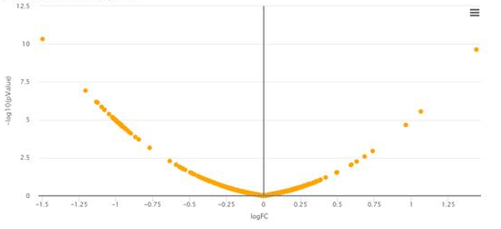

FAQ
Why does the table in experimental design blink during edition?
When you edit the experimental design (during converting a text file to MSnset or during the update of the design), it may happen that the cells begin to blink in a random order. Then, no more operation is possible in the table. This happens if you edit the cells too fast with respect to the table update speed. We apologize for this caveat : this is a known bug of the package used to provide the table. No patch is available yet. The only workaround is to close then reopen Prostar.
How to build a valid experimental design?
In Prostar, the differential analysis is devoted to the processing of hierarchical unpaired experimental designs. However, in former versions, this was not explicit enough, so that users with paired samples could used Prostar with wrong assumptions. To clear this out, we have changed the experimental design construction step so that its explicitly appears unpaired.
As a result, the samples must now be numbered as in the following example:
- Condition 1: 1 - 2 - 3 - 4,
- Condition 2: 5 - 6 - 7 - 8
As opposed to:
- Condition 1: 1 - 2 - 3 - 4,
- Condition 2: 1 - 2 - 3 - 4
Which, depending on the context, could suggest that the 8 samples comes only from 4 different biological subjects, and thus leading to paired tests - for instance, patients that are compared between Before (Condition 1) and After (Condition 2) some treatment.
However, one should note that even if the experimental design now looks different, this is just due to a numbering convention, and the statistical test is not impacted.
Why does my volcano plot look so aligned?

Volcano plot resulting from a Limma issue
In very uncommun situations, one may obtain a bowl shape volcano plot such as depicted above. This is due to using Limma on a dataset for which it is not adapted: Briefly, the numerical values in the quantitative matrix appears to have a repetitive pattern that prevent Limma routines to compute the number of degrees of freedom of the Chi2 distribution on which the protein variances should be fitted. As a result, Limma returns a result directly proportional to the fold-change, and the p-values are none-informative. In such cases, which are fortunately extremely odd, we advise to replace Limma test by a classical t-test.
How to recover differential analysis results?
From Prostar 1.14, the differential analysis results are not exported anymore when using the “Export fo file” functionality, regardless the format (MSnset, excel or zipped CSV). This is due to the separate management of the “data mining” and “data processing” outputs. As a result, after performing the differential analysis, the results must be downloaded thanks to the devoted buttons (otherwise, they will be lost when closing the Prostar session). However, all the p-value computatations (from the “hypothesis testing” menu) can be exported and recovered from one session to another one.
Why isn’t it possible to adjust the logFC threshold on each differential analysis comparison?
Shortly, because from a statistical viewpoint, doing so roughly amount to FDR cheating. We have observed that numerous practitioners use the logFC threshold as a way to discard some proteins on the volcano plot, so that other proteins of interests appear more strikingly. In addition to be an uncontrolled and subjective way of sorting the proteins regardless of p-values, it has an important side effect on FDR computation: FDR computation requires a sufficiently large amount of proteins “below” the horizontal threshold on the volcano plot. However, all the proteins filtered out because of a too low logFC are not considered in FDR computation, so that tuning the logFC threshold to a too high value (so as to fine tune the protein selection) may lead to a spurious FDR. Finally, in case of more than two conditions (say A, B and C) , it would not make sense to defined differently (i.e. with a different logFC threshold) differentialy abundant proteins across various comparisons (e.g. when comparing AvsB, BvsC and CvsA). For all these reasons, we advise Prostar user to define once and for all the logFC threshold of each proteomics experiment (to a minimal value, such that below the threshold, a protein cannot be interesting froma biological viewpoint, because de FC cannot be properly exploited). More detailed explanations can be found in the following articles:
- Q. Giai Gianetto, Y. Coute, C. Bruley and T. Burger. Uses and misuses of the fudge factor in quantitative discovery proteomics. Proteomics, 16(14):1955-60, 2016.
- T. Burger. Gentle introduction to the statistical foundations of false discovery rate in quantitative proteomics. Journal of Proteome Research, 17(1):12-22, 2017.
- S. Wieczorek, Q. Giai Gianetto, T. Burger. Five simple yet essential steps to correctly estimate the rate of false differentially abundant proteins in mass spectrometry analyses. Journal of Proteomics, vol 207, p. 103441, In Press, 2019 (Section 2).
How does “Push p-values” works?
This is now clearly explained and illustrated in Prostar user manual as well as in the following article (Section 3):
How should I tune the calibration plot options?
This is now clearly explained and illustrated in Prostar user manual as well as in the following article (Sections 4, 5 and 6):